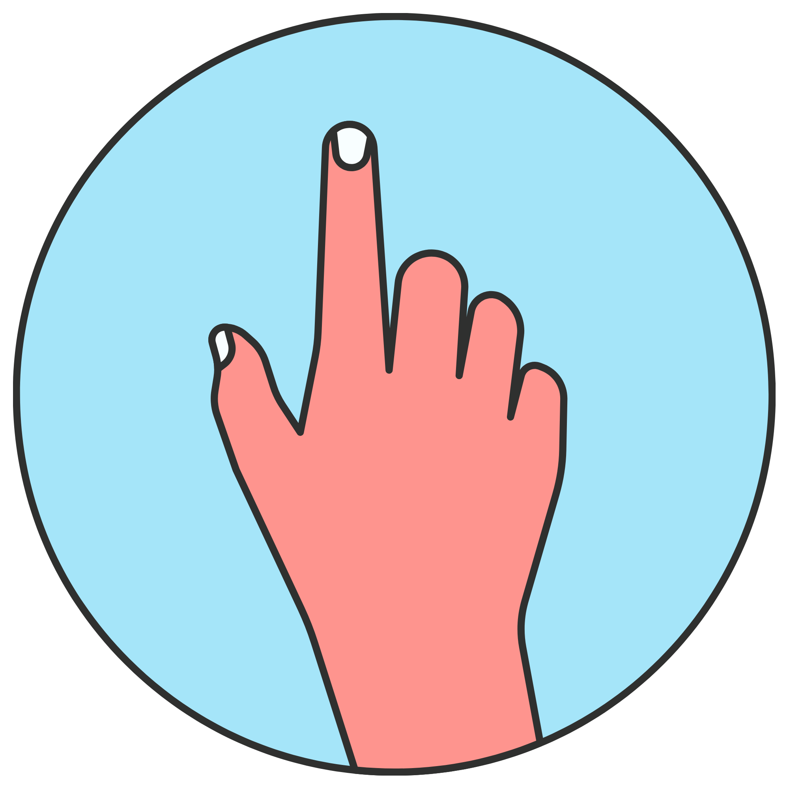

Kulit - Si Perasa Sentuhan
- Kulit adalah indra yang paling luas karena menutupi seluruh tubuh.
- Membantu kita merasakan panas, dingin, halus, kasar, atau sakit.
- Kulit juga melindungi tubuh dari luka dan benturan.
- Tanpa fungsi kulit yang baik, kita tidak bisa tahu kalau air itu terlalu panas atau benda itu tajam sehingga mudah terluka.

Bacalah dengan teliti dan catat hal penting!